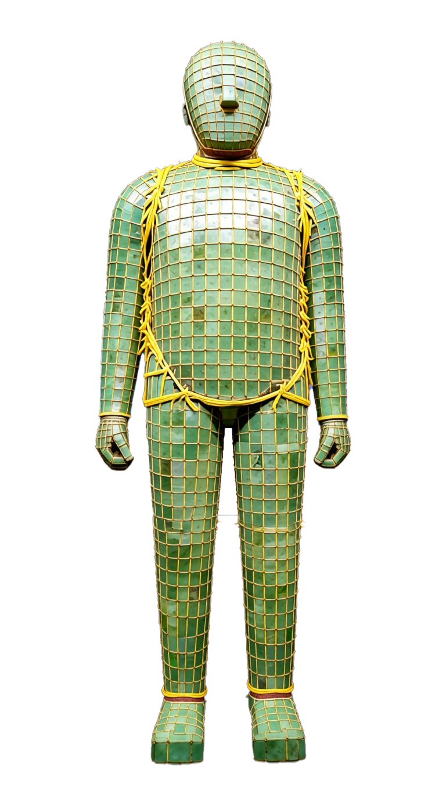

本毕业设计以"金玉不朽，美学古风"为总体创作理念，围绕西汉中山靖王刘胜的金缕玉衣展开，通过三维动画的形式，将历史文物、考古发现与文学哲思相结合，构建一场跨越两千年的精神对话。

三维动画概念视觉设定
动画以"黄粱一梦"为最高叙事隐喻，回应古人对肉身不朽的执念，并在当代视角下重新追问：真正不朽的究竟是生命本身，还是被文明记住的精神价值？
通过三维建模、材质渲染与动画叙事，本作品试图在数字媒介中重现汉代美学的庄严与神秘，同时探讨人类对永恒追求的普遍主题。